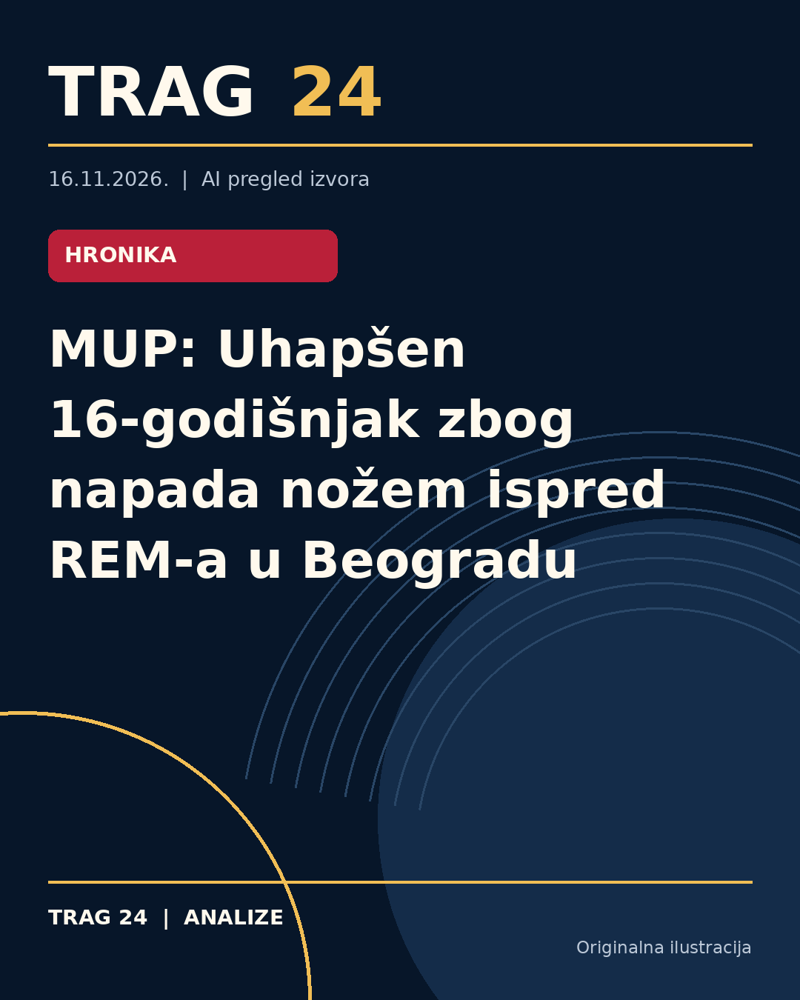

MUP: Uhapšen 16-godišnjak zbog napada nožem ispred REM-a u Beogradu

ŠTA SE DOGODILO
Danas je ispred prostorija Regulatornog tela za elektronske medije (REM) na Trgu Nikole Pašića u Beogradu uhapšen 16-godišnjak nakon što je nožem napao građane. Policija je intervenisala neposredno nakon incidenta koji se dogodio tokom sednice Saveta REM-a.
HRONOLOGIJA
Pripadnici MUP-a su bili angažovani na obezbeđivanju neprijavljenog okupljanja ispred REM-a. Tokom ovog događaja, 16-godišnjak je izvadio oštar predmet dužine oko 30 centimetara i krenuo u napad na građane. Incident se odigrao u popodnevnim časovima, a policija je uhapsila osumnjičenog neposredno posle događaja. Odeljenje za maloletnike Višeg javnog tužilaštva u Beogradu je saslušalo mladića i najavljeno je podnošenje krivične prijave zbog nasilničkog ponašanja.
ŠTA NAVODE IZVORI
Ministarstvo unutrašnjih poslova potvrdilo je hapšenje zbog napada nožem ispred REM-a. Članica Saveta REM-a, Dubravka Valić Nedeljković, izjavila je da se na bezbednosnim snimcima vidi osoba sa nožem u ruci, ali nije jasno da li su napadnuti novinari ili kamermani, niti da li je bilo povređenih. Svedoci su naveli da je napadač vikao dok je pokušavao da ubode građane. Sa druge strane, Informer piše da je napadnut i njihov novinar u incidentu, i sve to se dogodilo u trenutku dok se očekivala odluka REM-a o kaznama za Informer televiziju.
ŠTA JE POTVRĐENO
Potvrđeno je da je uhapšen 16-godišnjak koji je nožem napao građane ispred zgrade REM-a. Osumnjičeni je saslušan i protiv njega će biti podneta krivična prijava za nasilničko ponašanje u redovnom postupku. Incident se dogodio tokom neprijavljenog skupa, a policija je bila na terenu u trenutku događaja. Nije precizirano da li su novinari ili kamermani povređeni.
ŠTA NIJE POTVRĐENO
Nije potvrđeno da je među napadnutima bilo zaposlenih u medijima, kao ni da li je iko zadržan na lečenju ili teže povređen. Identitet napadnutih i više detalja o samom incidentu ostaje nepoznat. Informacije o govoru napadača i njegovoj izjavi dolaze od svedoka i nisu potvrđene od strane MUP-a.
ŠTA OSTАJE OTVORENO: Ostaje nejasno da li će biti dodatnih optužbi ili postupaka u vezi sa napadom, kao i da li će policija dodatno istraživati motive osumnjičenog. Takođe nije poznato da li je napad povezan sa neprijavljenim skupom i temom sednice REM-a. Dalje informacije o potencijalnim povredama napadnutih i eventualnoj odgovornosti drugih osoba nisu dostupne.
Izvori
- https://www.danas.rs/vesti/drustvo/mup-ispred-rem-a-uhapsen-16-godisnjak-napao-gradjane-nozem/
- https://informer.rs/politika/vesti/1170569/napadac-hapsenje-rem-policija
- https://insajder.net/prenosimo/mup-uhapsen-sesnaestogodisnjak-zbog-napada-nozem-na-gradane-ispred-rem-a
Ova analiza je pripremljena uz pomoć veštačke inteligencije na osnovu javno dostupnih izvora. Navodi izvora nisu nužno nezavisno potvrđeni.